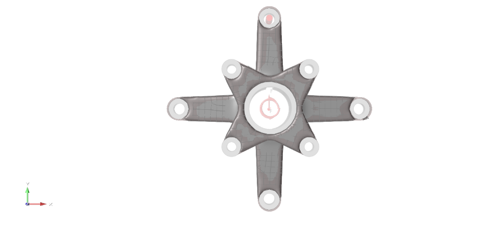
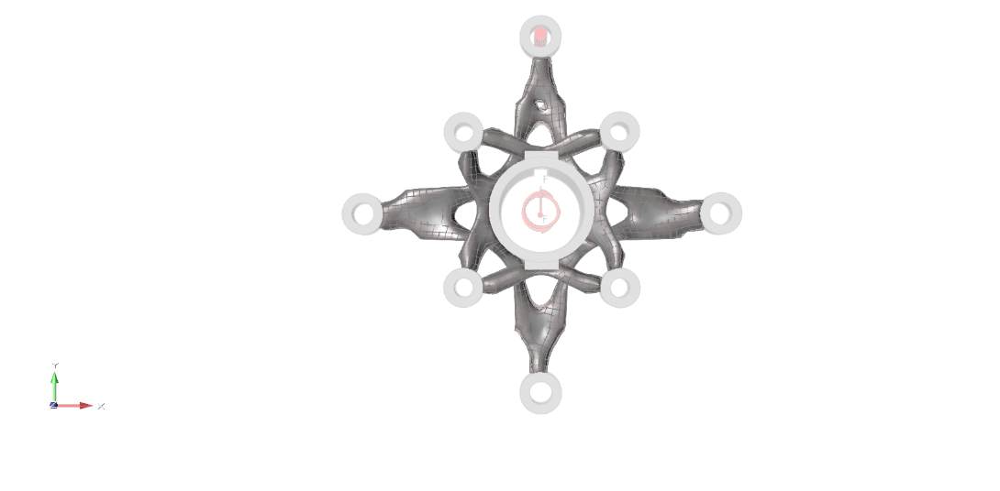
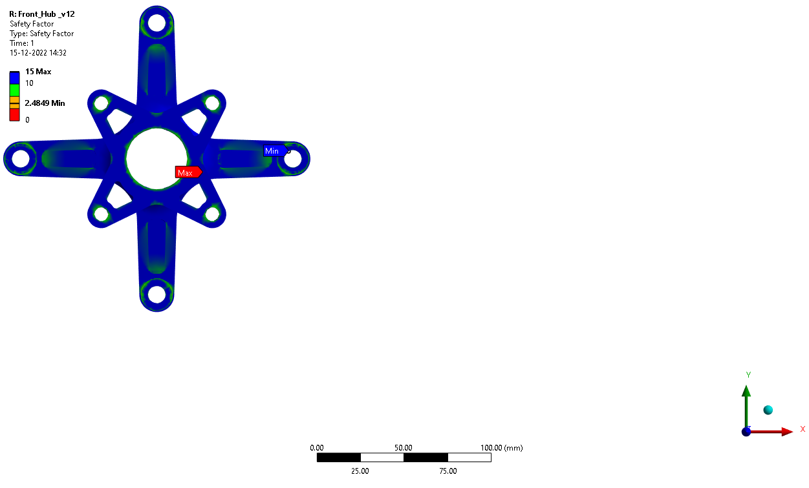

Front-hub topology optimization
Used topology optimization to explore a lighter front hub while retaining the wheel, brake, and bearing interfaces.
Topology study / simulation

Brief
The front hub carries wheel and braking loads. Removing material required a clear load path and structural checks around its mounting interfaces.
My work
Personally worked on topology optimization of the front hubs. This case focuses on that contribution within the wider RedShift vehicle-development effort.
- Started from the hub geometry and the mounting interfaces that had to remain.
- Used Altair Inspire to explore material removal under the report’s vehicle load cases.
- Reviewed the candidate geometry with ANSYS stress, deformation, and safety-factor results.
Engineering detail
Preserving the interfaces
The study considers bump, cornering, drive, and braking loads on an aluminum hub. The wheel and brake interfaces constrain where material can be removed. The safety-factor contour below documents the team’s structural analysis of the front hub.

Result
The RedShift CAE study reports a 14% weight reduction between the modeled front-hub designs.